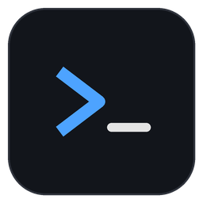

📝 메모
+
정보 ▾
도움 ▾
버전
업데이트
tmux 사용법
단축키 모음
ARMUX TERMINAL
오른쪽 위
+
버튼 또는
Ctrl/⌘ + N
으로 SSH 세션을 시작하세요.
Ctrl + 숫자
서브탭(가로 줄) 이동
Ctrl + Alt + 숫자
메인탭(세로 열) 이동
탭에 마우스 올리기
아래
+
로 서브탭 추가
서브탭 왼쪽 📁 파일
파일 탐색기 (📌 로 왼쪽 고정)
⌘D / Ctrl+Shift+D
좌우 분할 ·
⌘⇧D / Ctrl+Shift+E
상하 분할
Ctrl + `
파일 탐색기 ·
Ctrl + Alt + `
메모장
준비됨
▲
▼
✕
새 SSH 접속
✕
저장된 접속
+ 새로 만들기
클릭하면 폼에 불러오고, 더블클릭하면 바로 접속합니다.
새 접속 정보
이름
호스트
포트
사용자
인증
비밀번호
개인키 파일
SSH Agent
비밀번호
키 경로
찾기…
패스프레이즈
비밀번호도 저장(암호화)
새로 등록
은 항상 새 항목을 추가하고,
저장
은 왼쪽에서 고른 항목을 덮어씁니다. 저장하지 않고
접속
만 해도 됩니다.
삭제
새로 등록
저장
취소
접속
프로그램 정보
✕

Armux Terminal
버전
—
빌드 날짜
—
개발자
Jun Yeol Yang
기반
—
GitHub 바로가기
업데이트 확인
업데이트
✕
업데이트를 확인하는 중…
릴리스 페이지 열기
다시 확인
내려받기
도움말
✕